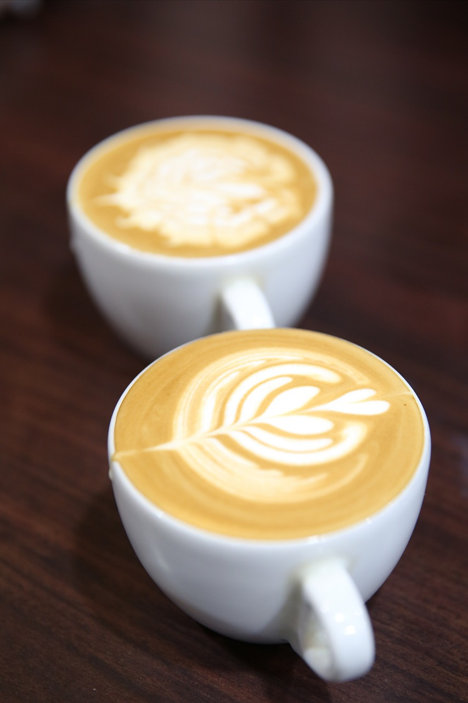
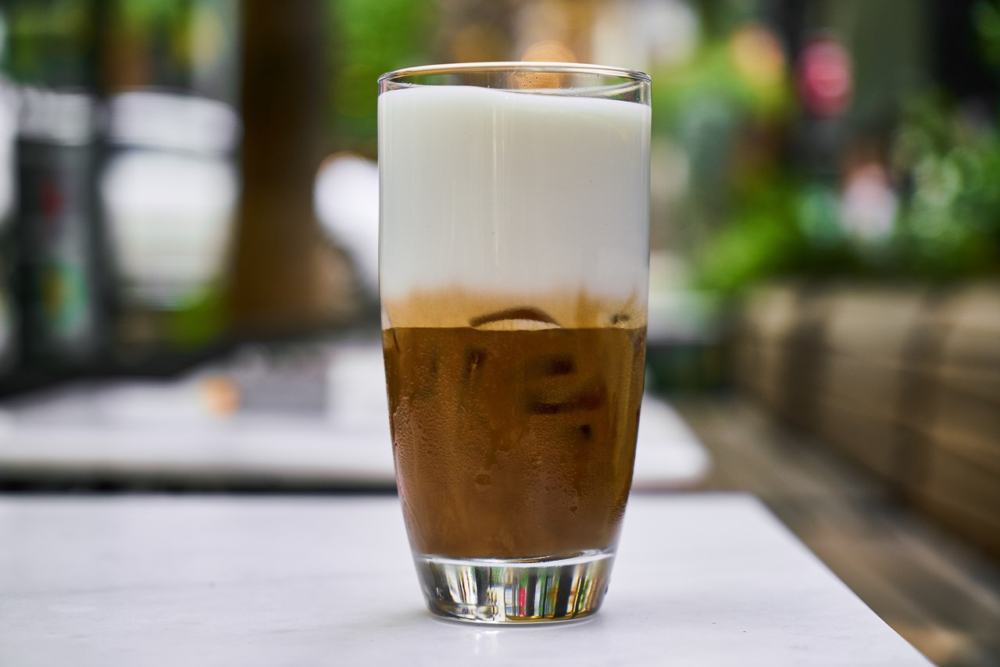

Café Espresso
Un espresso es una pequeña cantidad de café concentrado y muy fuerte. Se sirve en una taza pequeña y es la base de muchas otras bebidas de café.

Café Latte
Un café latte es una bebida de café hecha con espresso y leche vaporizada. Tiene una capa de espuma en la parte superior y se sirve en una taza más grande.

Café Mocha
Un café mocha es una variación de café latte que incluye chocolate en polvo o jarabe de chocolate. Se suele decorar con crema batida y espolvoreado de cacao.